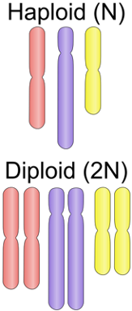
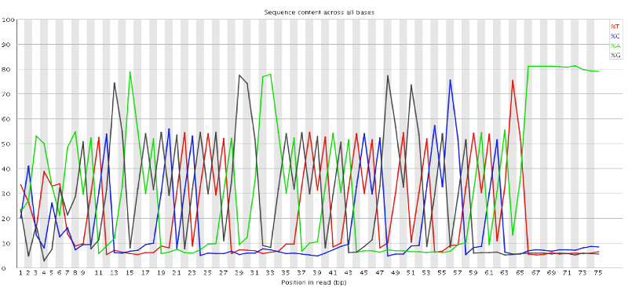
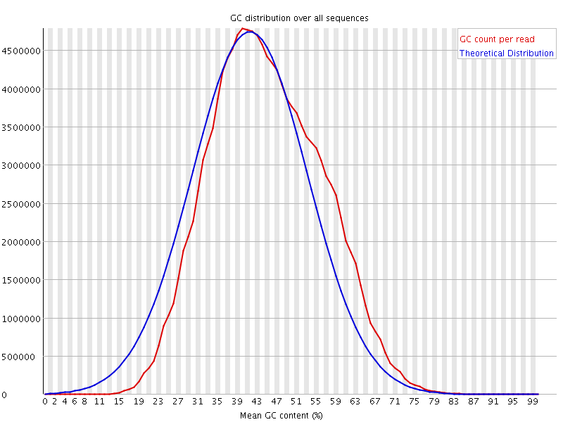
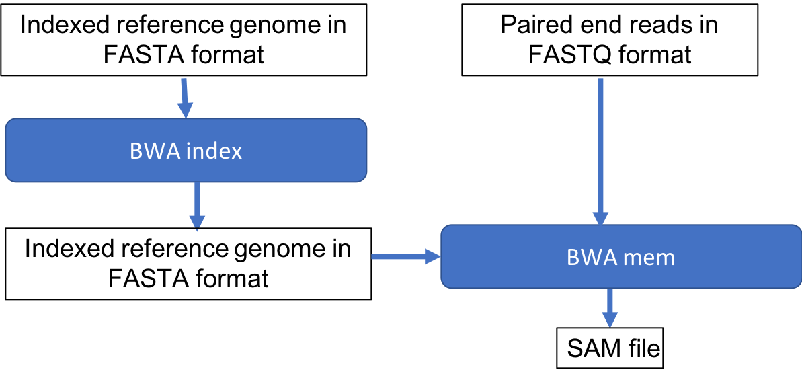

Combined
Background
Sequencing data analysis typically focuses on either assessing DNA or RNA. As a reminder here is the interplay between DNA, RNA, and protein:

Types of Sequencing
DNA Sequencing
- Fixed copy of a gene per cell
- Analysis goal: Variant calling and interpretation
RNA Sequencing
- Copy of a transcript per cell depends on gene expression
- Analysis goal: Differential expression and interpretation
Note
Here we are working with DNA sequencing
Next Generation Sequencing
Here we will analyze a DNA sequence using next generation sequencing data. Here are the steps to get that data:
- Library Preparation: DNA is fragmented and adapters are added to these fragments
- Cluster Amplification: This library is loaded onto a flow cell, where the adapters help hybridize the fragments to the flow cell. Each fragment is then amplified to form a clonal cluster

- Sequencing: Fluorescently labelled nucleotides are added to this flow cell and each time a base in the fragment bonds a light signal is emmitted telling the sequencer which base is which in the sequence.

- Alignment & Data Analysis: These sequenced fragments, or reads, can then be aligned to a reference sequence to determine differences.

Singe End v. Paired End Data
- single-end sequence each DNA fragement from one end only
- paired-end sequence each DNA fragement from both sides. Paired-end data is useful when sequencing highly repetitive sequences.

Variant Calling

Ploidy
-
When discussing variant calling it is worth mentioning an organism's ploidy. Ploidy is the number of copies of each chromosomes.
- Humans cells are diploid for autosomal chromosome and haploid for sex chromosomes
- Bacteria are haploid
- Viruses and Yeast can by haploid or diploid

-
Variant callers can use ploidy to improve specificity (avoid false positives) because there are expected variant frequencies, e.g. for a diploid:
- Homozygous
- both copies contain variant
-
fraction of the reads ~1
-
Heterozygous
- one copy of variant
- fraction of reads with variant ~0.5

Setup
Goals
- Connect to the HPC cluster via On Demand Interface
- Download data
Log into the HPC cluster's On Demand interface
- Open a Chrome browser and enter the URL https://ondemand.cluster.tufts.edu
- Log in with your Tufts Credentials
- On the top menu bar choose
Clusters->Tufts HPC Shell Access

- Type your password at the prompt (the password will be hidden for security purposes):
tutln01@login.cluster.tufts.edu's password: - You'll see a welcome message and a bash prompt, for example for user
tutln01:
[tutln01@login001 ~]$
This indicates you are logged in to the login node of the cluster.
- Type clear to clear the screen
Set up for the analysis
Find 500M storage space
- Check how much available storage you have in your home directory by typing
showquota.
Result:
Home Directory Quota
Disk quotas for user tutln01 (uid 31394):
Filesystem blocks quota limit grace files quota limit grace
hpcstore03:/hpc_home/home
1222M 5120M 5120M 2161 4295m 4295m
Listing quotas for all groups you are a member of
Group: facstaff Usage: 16819478240KB Quota: 214748364800KB Percent Used: 7.00%
Under blocks you will see the amount of storage you are using, and under quota you see your quota.
Here, the user has used 1222M of the available 5120M and has enough space for our analysis.
- If you do not have 500M available, you may have space in a project directory for your lab.
These are located in
/cluster/tuftswith names like/cluster/tufts/labname/username/. If you don't know whether you have project space, please email tts-research@tufts.edu.
Download the data
- Get an interaction session on a compute node (3 hours, 16 Gb memory, 4 cpu on 1 node) on the default partition (
batch) by typing:
srun --pty -t 3:00:00 --mem 16G -N 1 --cpus 4 bash
Notes:
If wait times are very long, you can try a different partitions by adding, e.g. -p preempt or -p interactive before bash.
If you go through this workshop in multiple steps, you will have to rerun this step each time you log in.
- Change to your home directory
cd
Or, if you are using a project directory:
cd /cluster/tufts/labname/username/
- Copy the course directory and all files in the directory (-R is for recursive):
cp -R /cluster/tufts/bio/tools/training/intro-to-ngs/ .
(Also available via: git clone https://gitlab.tufts.edu/rbator01/intro-to-ngs.git)
- Take a look at the contents using the
treecommand:
tree intro-to-ngs
You'll see a list of all files
intro-to-ngs
all_commands.sh <-- Bash script with all commands
raw_data <-- Folder with paired end fastq files
na12878_1.fq
na12878_2.fq
README.md <-- Contents description
ref_data <-- Folder with reference sequence
chr10.fa
2 directories, 5 files
Data for the class
Genome In a Bottle (GIAB) was initiated in 2011 by the National Institute of Standards and Technology "to develop the technical infrastructure (reference standards, reference methods, and reference data) to enable translation of whole human genome sequencing to clinical practice" (Zook et al 2012). We'll be using a DNA Whole Exome Sequencing (WES) dataset released by GIAB for the purposes of benchmarking bioinformatics tools.

The source DNA, known as NA12878, was taken from a single person: the daughter in a father-mother-child 'trio'. She is also mother to 11 children of her own, for whom sequence data is also available. (HBC Training). Father-mother-child 'trios' are often sequenced to study genetic links between family members.
As mentioned in the introduction, WES is a method to concentrate the sequenced DNA fragments in coding regions (exons) of the genome.

For this class, we've created a small dataset of reads that align to a single gene that will allow our commands to finish quickly.
Sample: NA12878
Gene: Cyp2c19 on chromosome 10
Sequencing: Illumina, Paired End, Exome
Quality Control
Goals
- Understand FASTQ file format
- Run FastQC to asses data quality
Assess the quality of the raw data
FASTQ format
FASTQ files is the most common way to store biological sequence data.
Depending on the sequencing protocol, a single FASTQ file can represent an entire flow cell, a single lane, a single sample, or a portion of a sample.
We have two FASTQ files in our raw_data folder, which are the paired end data of a single sample.
From our course directory into-to-ngs change into the raw data directory:
cd raw_data
Use the command head to look at the first few lines of our first FASTQ file.
head na12878_1.fq
Each read in our file is represented are by four lines: An identifier, the nucleotide sequence, an optional second identifier and a quality string. Below is an example, the arrows on the right show explanation of each line:
@SRR098401.109756285/1 <-- Sequence identifier: @ReadID / 1 or 2 of pair
GACTCACGTAACTTTAAACTCTAACAGAAATATACTA <-- Sequence
+ <-- + (optionally lists the sequence identifier again)
CAEFGDG?BCGGGEEDGGHGHGDFHEIEGGDDDD <-- Quality String
Base Quality Scores
The fourth line of each read is called the quality string. Each symbol in the string is an encoding of the quality score, representing the inferred base call accuracy at that position in the read. The manufacturer of the sequencing instrument has performed calibration of quality score by sequencing many well-characterized samples from multiple organisms and studying the correspondence between properties of the signal generated by the cluster being sequenced and the accuracy of the resulting base call.
The following two images explain this encoding. The first image shows the mapping of the encoded quality score to the quality score:

The second image shows the mapping of the quality score to the inferred base call accuracy:

Looking back at our sample read, we can see that the first base has an encoded quality score of C.
Using the first image above, we see that C encodes a quality of 34.
Using the second table, we see that the probability is < 1/1000 of that base being an error.
In the next section, we'll see how quality scores and other quality control metrics are used to evaluate the quality of
a sequenced sample.
More information on Quality scores from Illumina
FastQC
FastQC is widely used tool for both DNA and RNA sequencing data in order to evaluate the quality of the sequencing data.
To use, load the module:
module load fastqc/0.11.8
To see the input options, type:
fastqc --help
Result:
fastqc --help
FastQC - A high throughput sequence QC analysis tool
SYNOPSIS
fastqc seqfile1 seqfile2 .. seqfileN
fastqc [-o output dir] [--(no)extract] [-f fastq|bam|sam]
[-c contaminant file] seqfile1 .. seqfileN
...
FastQC is run on each FASTQ file separately in order to be sensitive to the variation in quality over lanes, samples, and paired-end files.
Since FastQC can run on multiple files at once, we'll use a wildcard * to indicate each file in the folder raw_data,
and we specify that the output should be placed in the directory we created called fastqc:
cd ..
mkdir fastqc
fastqc raw_data/* -o fastqc
Result:
Started analysis of na12878_1.fq
Approx 20% complete for na12878_1.fq
Approx 40% complete for na12878_1.fq
Approx 65% complete for na12878_1.fq
Approx 85% complete for na12878_1.fq
Analysis complete for na12878_1.fq
Started analysis of na12878_2.fq
Approx 20% complete for na12878_2.fq
Approx 40% complete for na12878_2.fq
Approx 65% complete for na12878_2.fq
Approx 85% complete for na12878_2.fq
Analysis complete for na12878_2.fq
To view the resulting files:
ls fastqc
The result shows an html file showing graphical results and a zip file containing the raw data for each input FASTQ file.
The easist way to view the result is to open the html files in a web browser.
na12878_1_fastqc.html na12878_1_fastqc.zip na12878_2_fastqc.html na12878_2_fastqc.zip
View results in the On Demand browser
To view the graphical results, return to the tab ondemand.cluster.tufts.edu
On the top menu bar choose Files->Home Directory

Navigate to the fastqc folder in course directory, e.g.: /home/username/intro-to-ngs/fastqc/
Right click on the file na12878_1_fastqc.html and select Open in new tab.

The new tab that opens in the browser has the results of FastQC for the first reads in the sample. We'll go through each plot. Note that the plots shown are representative results for WES data of varying quality, rather than those generated on the course data.
Per base sequence quality
The first plot shows the quality scores vs. position in the read, for all reads in the file.

For each position a Box and Whisker type plot is drawn. The elements of the plot are as follows: - The central red line is the median value - The yellow box represents the inter-quartile range (25-75%) - The upper and lower whiskers represent the 10% and 90% points - The blue line represents the mean quality
The background of the graph divides the y axis into very good quality calls (green), calls of reasonable quality (orange), and calls of poor quality (red). It is typical for reads generated by Illumina platforms to show reduced quality at the ends of reads due to fragments in a cluster becoming out-of-sync (Fuller et al 2009).
Per sequence quality scores
The Per Sequence Quality Score plots the distribution of mean sequence quality. This plot allows will show a peak toward lower mean quality if there is a subset of sequences with low quality values.

Per base sequence content
The Per Base Sequence Content plot shows the the proportion of each base called at each position in the read, for all reads in the file.

In a random library you would expect that bases would be present in equal proportions. In any given genome, however, the relative amount of each base will reflect the overall amount of these bases in your genome. In any case, we would expect the lines to run parallel to each other. If you see strong biases which change in different bases then this usually indicates an overrepresented sequence which is contaminating your library. Below is an example of a library that was contaminated with adapter dimers (from sequencing.qcfail.com)[https://sequencing.qcfail.com/articles/contamination-with-adapter-dimers/].

Per sequence GC content
This plot displays the fraction of G and C bases across for all sequences in the file. and compares it to a modelled normal distribution of GC content.

In a normal random library you would expect to see a roughly normal distribution of GC content where the central peak corresponds to the overall GC content of the underlying genome. The expected GC content is calculated from the observed data and used to build a reference distribution. An unusually shaped distribution could indicate a contaminated library or some other kinds of biased subset. A normal distribution which is shifted indicates some systematic bias which is independent of base position.
Per base N content
If a sequencer is unable to make a base call with sufficient confidence then it will normally substitute an N rather than a conventional base. This plot shows the percentage of base calls at each position for which an N was substituted.

Sequence Length Distribution
This plot shows the distribution of read sizes in the file. Depending on the sequencing method and whether reads have been post-processed, it may be expected to have reads of a uniform length or varying lengths. For our raw WES dataset we see a sharp peak at 76 bases, as expected.

Sequence Duplication Levels
This plot shows the distribution of sequence duplicates in the file. For example, in the below plot, over 80% of the total sequences are present only once and 10% are present twice.

In a diverse library most sequences will occur only once in the final set. A high level of duplication may indicate low library complexity or an enrichment bias (e.g. PCR over amplification).
Overrepresented sequences
This plot shows the sequences in the file which make up more than 0.1% of the total. A normal high-throughput library will contain a diverse set of sequences, with no individual sequence making up a more than a tiny fraction of the whole. Finding that a single sequence is very overrepresented in the set either means that it is highly biologically significant, or indicates that the library is contaminated, or not as diverse as you expected.
For each overrepresented sequence the program will look for matches in a database of common contaminants and will report the best hit it finds. Hits must be at least 20bp in length and have no more than 1 mismatch. Finding a hit doesn't necessarily mean that this is the source of the contamination, but may point you in the right direction. It's also worth pointing out that many adapter sequences are very similar to each other so you may get a hit reported which isn't technically correct, but which has very similar sequence to the actual match.
If overrepresented sequences are found but not identified by FastQC, try a BLAST search.
Adapter Content
This module looks for common adapters in the sequence.

Explanations adapted from [https://dnacore.missouri.edu/PDF/FastQC_Manual.pdf][https://dnacore.missouri.edu/PDF/FastQC_Manual.pdf]
Optional: Read trimming
In our Per base sequence quality we saw that the read quality dropped towards the end of the read.
In order to ensure alignment and variant calling are as accurate as possible, we can perform quality trimming of reads.
Trim Galore is a popular tool that in the default mode performs two types of trimming: Quality trimming: Trims low quality bases from the 3' end of the read Adapter trimming: Automatically detects and removes known Illumina adapters that may be present in the data
To perform trimming on the data, we first load the software which is installed as an a conda environment. For more information on using anaconda on the HPC, see this tutorial.
module load anaconda/3
source activate /cluster/tufts/bio/tools/conda_envs/trim_galore/
To run:
mkdir trim
trim_galore -o trim raw_data/*
Result:
...
=== Summary ===
Total reads processed: 4,652
Reads with adapters: 1,606 (34.5%)
Reads written (passing filters): 4,652 (100.0%)
Total basepairs processed: 353,552 bp
Quality-trimmed: 24,906 bp (7.0%)
Total written (filtered): 326,448 bp (92.3%)
...
Note that Trim Galore may trim adapters even in the case where FastQC found no adapters. This is because Trim Galore will remove partial adapters at the ends of reads.
The result after trimming is much improved:
Read Alignment
Goals
- Align short reads to a references genome with BWA
- View alignment using IGV

BWA Overview
Burrows-Wheeler Aligner (BWA) is a software package for mapping low-divergent sequences against a large reference genome, such as the human genome. The naive approach to read alignment is to compare a read to every position in the reference genome until a good match is found is far too slow. BWA solves this problem by creating an "index" of our reference sequence for faster lookup.
The following figure shows a short read with a red segment followed by a blue segment that we seek to align to a genome containing many blue and red segments. The table keeps track of all the locations where a given pattern of red and blue segments (seed sequence) occurs in the reference genome. When BWA encounters a new read, it looks up the seed sequence at the beginning of the read in the table and retrieves a set of positions that are potential alignment positions for that read. This speeds up the search by reducing the number of positions to check for a good match.

BWA has three algorithms:
- BWA-backtrack: designed for Illumina sequence reads up to 100bp (3-step)
- BWA-SW: designed for longer sequences ranging from 70bp to 1Mbp, long-read support and split alignment
- BWA-MEM: optimized for 70-100bp Illumina reads
We'll use BWA-MEM. Underlying the BWA index is the Burrows-Wheeler Transform This is beyond the scope of this course but is an widely used data compression algorithm.
BWA Index
In the following steps we'll create the BWA index.
-
Change to our reference data directory
cd intro-to-ngs/ref_data -
Preview our genome using the command
headby typing:
head chr10.fa
You'll see the first 10 lines of the file chr10.fa:
>chr10 AC:CM000672.2 gi:568336 <-- '>' charachter followed by sequence name
NNNNNNNNNNNNNNNNNNNNN <-- sequence
- Load the BWA module, which will give us access to the
bwaprogram:module load bwa/0.7.17
Test it out without any arguments in order to view the help message.
bwa
Result:
Program: bwa (alignment via Burrows-Wheeler transformation)
Version: 0.7.17-r1198-dirty
Contact: Heng Li <lh3@sanger.ac.uk>
Usage: bwa <command> [options]
Command: index index sequences in the FASTA format
Use the bwa index command to see usage instructions for genome indexing
bwa index
Result
Usage: bwa index [options] <in.fasta>
Options: -a STR BWT construction algorithm
Run the command as instructed, using the default options:
bwa index chr10.fa
Result:
[bwa_index] Pack FASTA... 0.93 sec
[bwa_index] Construct BWT for the packed sequence...
[BWTIncCreate] textLength=267594844, availableWord=30828588
[BWTIncConstructFromPacked] 10 iterations done. 50853228 characters processed.
[BWTIncConstructFromPacked] 20 iterations done. 93947292 characters processed.
[BWTIncConstructFromPacked] 30 iterations done. 132245372 characters processed.
[BWTIncConstructFromPacked] 40 iterations done. 166280796 characters processed.
[BWTIncConstructFromPacked] 50 iterations done. 196527516 characters processed.
[BWTIncConstructFromPacked] 60 iterations done. 223406844 characters processed.
[BWTIncConstructFromPacked] 70 iterations done. 247293244 characters processed.
[BWTIncConstructFromPacked] 80 iterations done. 267594844 characters processed.
[bwt_gen] Finished constructing BWT in 80 iterations.
[bwa_index] 59.13 seconds elapse.
[bwa_index] Update BWT... 0.67 sec
[bwa_index] Pack forward-only FASTA... 0.59 sec
[bwa_index] Construct SA from BWT and Occ... 24.98 sec
[main] Version: 0.7.17-r1198-dirty
[main] CMD: bwa index chr10.fa
[main] Real time: 87.087 sec; CPU: 86.306 sec
When it's done, take a look at the files produced by typing ls.
The following is the result, with arrows and text on the right giving an explanation of each file.
chr10.fa <-- Original sequence
chr10.fa.amb <-- Location of ambiguous (non-ATGC) nucleotides
chr10.fa.ann <-- Sequence names, lengths
chr10.fa.bwt <-- BWT suffix array
chr10.fa.pac <-- Binary encoded sequence
chr10.fa.sa <-- Suffix array index
BWA alignment
Let's check the usage instructions for BWA mem by typing bwa mem
Usage: bwa mem [options] <idxbase> <in1.fq> [in2.fq]
Algorithm options:
-t INT number of threads [1]
-k INT minimum seed length [19]
-w INT band width for banded alignment [100]
-d INT off-diagonal X-dropoff [100]
-r FLOAT look for internal seeds inside a seed longer than {-k} * FLOAT [1.5]
-y INT seed occurrence for the 3rd round seeding [20]
-c INT skip seeds with more than INT occurrences [500]
-D FLOAT drop chains shorter than FLOAT fraction of the longest overlapping chain [0.50]
-W INT discard a chain if seeded bases shorter than INT [0]
-m INT perform at most INT rounds of mate rescues for each read [50]
-S skip mate rescue
-P skip pairing; mate rescue performed unless -S also in use
...
Since our alignment command will have multiple arguments, it will be convenient to write a script.
Go up one level to our main intro-to-ngs directory:
cd ..
Make a new directory for our results
mkdir results
Open a text editor with the program nano and create a new file called bwa.sh.
nano bwa.sh
Enter the following text.
Note that each line ends in a single backslash \, which will be read as a line continuation.
Be careful to put a space before the backslash and not after.
This serves to make the script more readable.
module load bwa/0.7.17
bwa mem \
-t 2 \
-M \
-R "@RG\tID:reads\tSM:na12878\tPL:illumina" \
-o results/na12878.sam \
ref_data/chr10.fa \
raw_data/na12878_1.fq \
raw_data/na12878_2.fq
Let's look line by line at the options we've given to BWA:
1. -t 2 : BWA runs two parallel threads. Alignment is a task that is easy to parallelize
because alignment of a read is independent of other reads. Recall that in Setup we asked for a compute
node allocation with --cpus=4, which can process up to 8 threads. Here we are using only 2 threads.
-
-M: "mark shorter split hits as secondary". This option will change the SAM flag (discussed in next section) that is assigned to short reads that have read segments mapped to distant locations. It optionn is needed for GATK/Picard compatibility, which are tools we use downstream. see this explanation on biostars -
-R "@RG\tID:reads\tSM:na12878\tPL:illumina": Add a read group tag (RG), sample name (SM), and platform (PL) to our alignment file header. We'll see where this appears in our output. In addition to being required for GATK, it's advisable to always add these labels to make the origin of the reads clear. -
-o results/na12878.sam: Place the output in the results folder and give it a name -
The following arguments are our reference, read1 and read2 files, in the order required by BWA:
ref_data/chr10.fa \ raw_data/na12878_1.fq \ raw_data/na12878_2.fq
Exit nano by typing ^X and follow prompts to save and name the file bwa.sh.
Now we can run our script.
sh bwa.sh
Result:
[M::bwa_idx_load_from_disk] read 0 ALT contigs
[M::process] read 9304 sequences (707104 bp)...
[M::mem_pestat] # candidate unique pairs for (FF, FR, RF, RR): (0, 2256, 0, 0)
[M::mem_pestat] skip orientation FF as there are not enough pairs
[M::mem_pestat] analyzing insert size distribution for orientation FR...
[M::mem_pestat] (25, 50, 75) percentile: (120, 160, 216)
[M::mem_pestat] low and high boundaries for computing mean and std.dev: (1, 408)
[M::mem_pestat] mean and std.dev: (172.35, 67.15)
[M::mem_pestat] low and high boundaries for proper pairs: (1, 504)
[M::mem_pestat] skip orientation RF as there are not enough pairs
[M::mem_pestat] skip orientation RR as there are not enough pairs
[M::mem_process_seqs] Processed 9304 reads in 1.034 CPU sec, 0.518 real sec
List the files in the results directory by typing ls results.
Result:
na12878.sam
Sequence Alignment Map (SAM)
Take a look at the output file:
cd results
head na12878.sam
Header:
@SQ SN:chr10 LN:133797422 <-- Reference sequence name (SN) and length (LN)
@RG ID:reads SM:na12878 <-- Read group (ID) and sample (SM) information that we provided
@PG ID:bwa PN:bwa VN:0.7.17 CL:bwa mem <-- Programs and arguments used in processing
Alignment:
| 1 | 2 | 3 | 4 | 5 | 6 | 7 | 8 | 9 | 10 | 11 |
|---|---|---|---|---|---|---|---|---|---|---|
| SRR098401.109756285 | 83 | chr10 | 94760653 | 60 | 76M | = | 94760647 | -82 | CTAA | D?@A... |
| SRR098401.109756285 | 163 | chr10 | 94760647 | 60 | 76M | = 94760653 | 82 | ATTA | ?>@@... |
The fields: 1. Read ID 2. Flag: indicates alignment information e.g. paired, aligned, etc. Here is a useful site to decode flags. 3. Reference sequence name 4. Position on the reference sequence where mapping starts 5. Mapping Quality 6. CIGAR string: summary of alignment, e.g. match (M), insertion (I), deletion (D) 7. RNEXT: Name of reference sequence where the other read in the pair aligns 8. PNEXT: Position in the reference sequence where the other read in the pair aligns 9. TLEN: Template length, size of the original DNA or RNA fragment 10. Read Sequence 11. Read Quality
More information on SAM format.
Alignment Quality Control
Next, we'd like to know how well our reads aligned to the reference genome?
We'll use a tool called Samtools to summarize the SAM Flags.
To load the module:
module load samtools/1.9
To run the flagstat program on our SAM file:
samtools flagstat na12878.sam
Result:
9306 + 0 in total (QC-passed reads + QC-failed reads) <-- We have only QC pass reads
2 + 0 secondary <-- 2 reads have >1 alignment position
0 + 0 supplementary <-- for reads that align to multiple chromosomes
0 + 0 duplicates
9271 + 0 mapped (99.62% : N/A) <-- For exome data, >90% alignment is expected
9304 + 0 paired in sequencing
4652 + 0 read1
4652 + 0 read2
9226 + 0 properly paired (99.16% : N/A)
9240 + 0 with itself and mate mapped
29 + 0 singletons (0.31% : N/A)
0 + 0 with mate mapped to a different chr
0 + 0 with mate mapped to a different chr (mapQ>=5)
Samtools flagstat is a great way to check to make sure that the aligment meets the quality expected. In this case, >99% properly paired and mapped indicates a high quality alignment.
Summary

Alignment Cleanup
Goals
- Sort and Index SAM/BAM files
- Mark duplicate reads in BAM file

Sort SAM file
Downstream applications require that reads in SAM files be sorted by reference genome coordinates (fields 3 and 4 in each line of our SAM file). This will assist in fast search, display and other functions.
| 1 | 2 | 3 | 4 | 5 | 6 | 7 | 8 | 9 | 10 | 11 |
|---|---|---|---|---|---|---|---|---|---|---|
| SRR098401.109756285 | 83 | chr10 | 94760653 | 60 | 76M | = | 94760647 | -82 | CTAA | D?@A... |
Well use the Picard toolkit for this and othter SAM file manipulations.
Open another script in our course directory called picard.sh
cd ..
nano picard.sh
Enter the following text:
module load picard/2.8.0
picard SortSam \
INPUT=results/na12878.sam \
OUTPUT=results/na12878.srt.bam \
SORT_ORDER=coordinate
We have input our SAM file and we will output a Binary Alignment Map (BAM) file, which is a compressed version of SAM format.
Exit nano by typing ^X and follow prompts to save the file picard.sh.
To run the script:
sh picard.sh
Result:
[Fri May 08 15:38:55 EDT 2020] picard.sam.SortSam INPUT=results/na12878.sam OUTPUT=results/na12878.srt.bam SORT_ORDER=coordinate VERBOSITY=INFO QUIET=false VALIDATION_STRINGENCY=STRICT COMPRESSION_LEVEL=5 MAX_RECORDS_IN_RAM=500000 CREATE_INDEX=false CREATE_MD5_FILE=false GA4GH_CLIENT_SECRETS=client_secrets.json
[Fri May 08 15:38:55 EDT 2020] Executing as rbator01@pcomp31 on Linux 2.6.32-696.1.1.el6.x86_64 amd64; Java HotSpot(TM) 64-Bit Server VM 1.8.0_60-b27; Picard version: 2.8.0-SNAPSHOT
INFO 2020-05-08 15:38:56 SortSam Finished reading inputs, merging and writing to output now.
[Fri May 08 15:38:57 EDT 2020] picard.sam.SortSam done. Elapsed time: 0.02 minutes.
Runtime.totalMemory()=2058354688
Take a look at the results directory:
ls results
The result shows that the sorted BAM file has been created:
na12878.sam na12878.srt.bam
Mark Duplicates in BAM file
Many copies are made of a single DNA fragment during the sequencing process. The amount of duplication may not be the same for all sequences and this can cause biases in variant calling. Therefore, we mark the duplicates so the variant caller can focus on the unique reads.
Duplicate reads are identified based on their alignment coordinates and CIGAR string. For example, the below alignment appears to have a G to A mutation in the majority of reads:

However, when the duplicates are removed, the number of reads supporting the mutation drops to one.

Let's add this step to our picard.sh script in order to illustrate how to include multiple steps in a single script.
Note that when we run it, we'll rerun our previous steps as well.
nano picard.sh
printf "..... Starting Mark Duplicates ....\n\n"
picard MarkDuplicates \
INPUT=results/na12878.srt.bam \
OUTPUT=results/na12878.srt.markdup.bam \
READ_NAME_REGEX=null \
METRICS_FILE=results/na12878.markdup.txt
The first line is a formatted print (printf) statement that will display useful log lines when our script is running.
The option READ_NAME_REGEX=null is added because our read names, downloaded from GIAB do not contain information about the position on the flowcell.
When present this information can help with estimating optical duplicated.
Typically, datasets do contain this information and it is best to omit this line when processing your data.
To run our script (Note this will rerun the first step as well. This is only for demonstration purposes. If you were developing this for your own use, you would instead write all commands and run the script once):
sh picard.sh
In addition to our previous log, we'll see our log line, followed by the output from Mark Duplicates:
.... Starting Mark Duplicates ....
[Fri May 08 16:03:52 EDT 2020] picard.sam.markduplicates.MarkDuplicates INPUT=[results/na12878.srt.sam] OUTPUT=results/na12878.srt.markdup.sam METRICS_FILE=results/na12878.markdup.txt READ_NAME_REGEX=null MAX_SEQUENCES_FOR_DISK_READ_ENDS_MAP=50000 MAX_FILE_HANDLES_FOR_READ_ENDS_MAP=8000 SORTING_COLLECTION_SIZE_RATIO=0.25 REMOVE_SEQUENCING_DUPLICATES=false TAGGING_POLICY=DontTag REMOVE_DUPLICATES=false ASSUME_SORTED=false DUPLICATE_SCORING_STRATEGY=SUM_OF_BASE_QUALITIES PROGRAM_RECORD_ID=MarkDuplicates PROGRAM_GROUP_NAME=MarkDuplicates OPTICAL_DUPLICATE_PIXEL_DISTANCE=100 VERBOSITY=INFO QUIET=false VALIDATION_STRINGENCY=STRICT COMPRESSION_LEVEL=5 MAX_RECORDS_IN_RAM=500000 CREATE_INDEX=false CREATE_MD5_FILE=false GA4GH_CLIENT_SECRETS=client_secrets.json
[Fri May 08 16:03:52 EDT 2020] Executing as rbator01@pcomp31 on Linux 2.6.32-696.1.1.el6.x86_64 amd64; Java HotSpot(TM) 64-Bit Server VM 1.8.0_60-b27; Picard version: 2.8.0-SNAPSHOT
INFO 2020-05-08 16:03:52 MarkDuplicates Start of doWork freeMemory: 2042614304; totalMemory: 2058354688; maxMemory: 28631367680
INFO 2020-05-08 16:03:52 MarkDuplicates Reading input file and constructing read end information.
INFO 2020-05-08 16:03:52 MarkDuplicates Will retain up to 110120644 data points before spilling to disk.
INFO 2020-05-08 16:04:03 MarkDuplicates Read 9300 records. 0 pairs never matched.
INFO 2020-05-08 16:04:09 MarkDuplicates After buildSortedReadEndLists freeMemory: 2020313280; totalMemory: 2915041280; maxMemory: 28631367680
INFO 2020-05-08 16:04:09 MarkDuplicates Will retain up to 894730240 duplicate indices before spilling to disk.
INFO 2020-05-08 16:04:11 MarkDuplicates Traversing read pair information and detecting duplicates.
INFO 2020-05-08 16:04:11 MarkDuplicates Traversing fragment information and detecting duplicates.
INFO 2020-05-08 16:04:11 MarkDuplicates Sorting list of duplicate records.
INFO 2020-05-08 16:04:14 MarkDuplicates After generateDuplicateIndexes freeMemory: 3340626880; totalMemory: 10530324480; maxMemory: 28631367680
INFO 2020-05-08 16:04:14 MarkDuplicates Marking 864 records as duplicates.
WARNING 2020-05-08 16:04:14 MarkDuplicates Skipped optical duplicate cluster discovery; library size estimation may be inaccurate!
INFO 2020-05-08 16:04:14 MarkDuplicates Reads are assumed to be ordered by: coordinate
INFO 2020-05-08 16:04:16 MarkDuplicates Before output close freeMemory: 10507885056; totalMemory: 10530324480; maxMemory: 28631367680
INFO 2020-05-08 16:04:16 MarkDuplicates After output close freeMemory: 10507907720; totalMemory: 10530324480; maxMemory: 28631367680
[Fri May 08 16:04:16 EDT 2020] pic
Mark Duplicates Metrics file
The following is the metrics file na12878.markdup.txt generated by Picard Mark Duplicates:
| LIBRARY | UNPAIRED_READS_EXAMINED | READ_PAIRS_EXAMINED | SECONDARY_OR_SUPPLEMENTARY_RDS | UNMAPPED_READS | UNPAIRED_READ_DUPLICATES | READ_PAIR_DUPLICATES | READ_PAIR_OPTICAL_DUPLICATES | PERCENT_DUPLICATION | ESTIMATED_LIBRARY_SIZE |
|---|:---:|:---:|:---:|:---:|:---:|:---:|:---:|:---:|:---:| | Unknown | 29 | 4620 | 2 | 35 | 14 | 425 | 0 | 0.093214 | 23546 |
Normal % duplication for exome sequencing data is 10-30%.
By scrolling to the left in this table we see that our percent duplication is 0.093214%.
Index the BAM file
In order to view the alignment with the Integrated Genomics Viewer (IGV) we are required to create an index files for our BAM file. This facilitates fast lookup of genomics coordinates.
Let's continue editing our script:
nano picard.sh
Add the following lines at the end of the script:
printf '.... Start BAM Indexing ....\n\n'
picard BuildBamIndex \
INPUT=results/na12878.srt.markdup.bam
Run our script:
sh picard.sh
Result, in addition to previous output:
.... Start BAM Indexing ....
[Fri May 08 16:24:17 EDT 2020] picard.sam.BuildBamIndex INPUT=results/na12878.srt.markdup.bam VERBOSITY=INFO QUIET=false VALIDATION_STRINGENCY=STRICT COMPRESSION_LEVEL=5 MAX_RECORDS_IN_RAM=500000 CREATE_INDEX=false CREATE_MD5_FILE=false GA4GH_CLIENT_SECRETS=client_secrets.json
[Fri May 08 16:24:17 EDT 2020] Executing as rbator01@pcomp31 on Linux 2.6.32-696.1.1.el6.x86_64 amd64; Java HotSpot(TM) 64-Bit Server VM 1.8.0_60-b27; Picard version: 2.8.0-SNAPSHOT
WARNING: BAM index file /cluster/home/rbator01/intro-to-ngs/results/na12878.srt.markdup.bai is older than BAM /cluster/home/rbator01/intro-to-ngs/results/na12878.srt.markdup.bam
INFO 2020-05-08 16:24:18 BuildBamIndex Successfully wrote bam index file /cluster/home/rbator01/intro-to-ngs/results/na12878.srt.markdup.bai
[Fri May 08 16:24:18 EDT 2020] picard.sam.BuildBamIndex done. Elapsed time: 0.01 minutes.
Runtime.totalMemory()=2058354688
We can see the files that were generated by typing ls results
na12878.sam
na12878.srt.bam
na12878.srt.markdup.bam
na12878.markdup.txt
na12878.srt.markdup.bai <--- Index file
BAM Visualization with IGV
- With a Chrome web browser, visit https://ondemand.cluster.tufts.edu
- Login with your Tufts credentials
-
Choose Interactive Apps->IGV. Set parameters, click Launch
-
Choose
Interactive Apps->IGV. Set parameters below and , clickLaunch
- Choose the following compute resource parameters: 1 hour, 2 cores, 4 GB memory, Default Batch Parition, Default Reservation

- Click the blue button
Launch NoVNC in New Tabwhen it appears
After this the IGV window will appear, probably as a small window on a grey background. Click the square icon in the top right corner to maximize the window.
Load reference genome and BAM file
- Choose reference genome by clicking the
Genomesmenu and selectingLoad Genome from Server...

- Scroll down to
Human hg38

-
DO NOT check
Download Sequnence -
Click
OK -
Load the BAM file by clicking the
Filemenu and selectLoad from File...
-
Navigate to the results folder in the course directory, e.g.
/cluster/home/your-user-name/intro-to-ngs/results. -
Select
na12878.srt.markdup.bam
You will have the following view:

Each row of data is called a track. There are five tracks visible: the top track shows the pq bands of the entire chromosome, followed by the reference genome coordinate track, followed by two tracks of our alignment (coverage and reads, respectively) which don't yet show data, followed by a reference genome annotation track called "Genes".
Examining a gene
- In the box indicated in green below, type gene name "Cyp2c19" and hit enter. You will see the gene model display in the Genes track, showing vertical bars where exons are located

Troubleshooting tip: At times IGV on demand will stop allowing the user to type input.
If that happens, close the tab, go back to the on demand window, rejoin the session by clicking Launch NoVNC in New Tab.
- Let's zoom in on exon 7. You can hover over exons in the
Genestrack to get information such as exon number. Click and drag over a region in the reference coordinate track to zoom in on exon 7 (highlighted in green below.)

- We can see that there is a variant in this exon.

- Zoom in even further until the nucleotide letters are clear. Then, hover with your mouse over the coverage track to find out more information about this variant.
It appear there are two variants next to each other: heterozygousC>T at position chr10:94,842,865 and homozygous
A>G at position chr10:94,842,866. Next, we'll explore the meaning of these variants.
This lesson adapted from HBC NGS Data Analysis
Variant Calling
Goals
- Use Genome Analysis Tool Kit (GATK) to call variants
Prepare the reference sequence for GATK
GATK requires a Sequence Dictionary for reference genomes used in variant calling. The sequence dictionary contains names and lengths of all chromosomes in the reference genome. The information in this file is transferred to the Variant Call File (VCF) when it is produced, so that there is no ambiguity about which reference was used to produce the file.
Let's open a new script
nano prepare.sh
Add these lines:
module load samtools/1.9
module load picard/2.8.0
samtools faidx ref_data/chr10.fa
picard CreateSequenceDictionary \
REFERENCE=ref_data/chr10.fa \
OUTPUT=ref_data/chr10.dict
With these steps, we load the necessary modules, created a FASTA index for our reference sequence, and use Picard to create our Sequence Dictionary.
Run our script:
sh prepare.sh
Result:
[Fri May 08 16:52:35 EDT 2020] picard.sam.CreateSequenceDictionary REFERENCE=ref_data/chr10.fa OUTPUT=ref_data/chr10.dict TRUNCATE_NAMES_AT_WHITESPACE=true NUM_SEQUENCES=2147483647 VERBOSITY=INFO QUIET=false VALIDATION_STRINGENCY=STRICT COMPRESSION_LEVEL=5 MAX_RECORDS_IN_RAM=500000 CREATE_INDEX=false CREATE_MD5_FILE=false GA4GH_CLIENT_SECRETS=client_secrets.json
[Fri May 08 16:52:35 EDT 2020] Executing as rbator01@pcomp31 on Linux 2.6.32-696.1.1.el6.x86_64 amd64; Java HotSpot(TM) 64-Bit Server VM 1.8.0_60-b27; Picard version: 2.8.0-SNAPSHOT
[Fri May 08 16:52:35 EDT 2020] picard.sam.CreateSequenceDictionary done. Elapsed time: 0.01 minutes.
Runtime.totalMemory()=2058354688
Two new files are created in the folder ref_data, our FASTA index (fai) and sequence dictionary (dict):
chr10.fa.fai
chr10.dict
Variant Calling with GATK HaplotypeCaller
GATK has two main goals: - Separate true variants from sequencing error - Establish which variants co-exist on a single DNA strand (haplotype)
The figure below described the 4 stages of the GATK HaplotypeCaller algorithm (from software.broadinstitute.org ).

Paraphrasing from the GATK documentation, the four stages are as follows:
-
Define active regions. The program determines which regions of the genome it needs to operate on, based on the presence of significant evidence for variation.
-
Determine haplotypes by re-assembly of the active region. For each active region, the program builds a graph to represent all possible read sequences spanning the region. For example, the top first read starts in the
TATGbubble that is common to all reads, then takes the top path to theAbubble, continues through theAAT, etc. The program then realigns each haplotype (path through the graph) against the reference sequence in order to identify potentially variant sites. -
Determine likelihoods of the haplotypes given the read data. The goal of this stage is to evaluate which haplotypes have the most read support. For each active region, the program performs a pairwise alignment of each read against each haplotype using the PairHMM algorithm, which takes into account other information about the data, such as quality scores. This produces a matrix of likelihoods of haplotypes given the read data. These likelihoods are then used to calculate how much evidence there is for individual alleles at each variant site (marginalization over alleles).
-
Assign sample genotypes. The final step is to determine which sequences were most likely present in the data. This step uses Bayes' rule to find the most likely genotype, given the allele likelihoods calculated in the last step.
Run GATK on our BAM file
To load the module on our system, we'll type:
module load GATK/3.7
gatk --help
The result shows the many different tools inside GATK. The relevant lines for HaplotypeCaller are:
usage: java -jar GenomeAnalysisTK.jar -T <analysis_type>
haplotypecaller
HaplotypeCaller Call germline SNPs and indels via local re-assembly of haplotypes
HaplotypeResolver Haplotype-based resolution of variants in separate callsets.
For tool specific help, we type:
gatk -T HaplotypeCaller --help
Let's write a new script:
nano gatk.sh
Add these lines, which specify the reference file, input BAM, and output VCF.
module load GATK/3.7
gatk -T HaplotypeCaller \
-R ref_data/chr10.fa \
-I results/na12878.srt.markdup.bam \
-o results/na12878.vcf
Run our script:
sh gatk.sh
Result:
INFO 17:17:41,656 HelpFormatter - -----------
INFO 17:17:41,660 HelpFormatter - The Genome Analysis Toolkit (GATK) v3.7-0-gcfedb67, Compiled 2016/12/12 11:21:18
Two new files have appeared in our results folder, the variant call file (VCF) and index file, respectively:
na12878.vcf
na12878.vcf.idx
VCF format
We can take a look at the first few lines of our vcf file:
cd results
head na12878.vcf
VCF, like BAM files, files contain two sections: A header section, indicated by the presence of # at the beginning of the line,
followed by data lines for each variant that was called.
##fileformat=VCFv4.2
##FILTER=<ID=LowQual,Description="Low quality">
##FORMAT=<ID=AD,Number=R,Type=Integer,Description="Allelic depths for the ref and alt alleles in the order listed">
##FORMAT=<ID=DP,Number=1,Type=Integer,Description="Approximate read depth
##FORMAT=<ID=GQ,Number=1,Type=Integer,Description="Genotype Quality">
##FORMAT=<ID=GT,Number=1,Type=String,Description="Genotype">
##FORMAT=<ID=PL,Number=G,Type=Integer,Description="Normalized, Phred-scaled likelihoods for genotypes
##GATKCommandLine.HaplotypeCaller=<ID=HaplotypeCaller,...
.
##contig=<ID=chr10,length=135534747>
##reference=file:///cluster/home/tutln01/intro-to-ngs/ref_data/chr10.fa
#CHROM POS ID REF ALT QUAL FILTER INFO FORMAT NA12878
chr10 96521422 . A G 60.28 . AC=2;AF=1.00; . GT:AD:DP:GQ:PL 1/1:0,3:3:9:88,9,0
chr10 96522365 . T C 1134.77 . AC=1;AF=0.500;. GT:AD:DP:GQ:PL 0/1:47,37:84:99:1163,0,1502
The header lines explain the meaning of notation found in the body section of the VCF, as well as information about the reference and software used to produce the VCF. The last header line lists the column titles for information, and the last column has the sample name. VCF can be used to represent multiple samples, and in that case, each sample would have it's own subsequent column.
Let's look at the body section in table format:
| CHROM | POS | ID | REF | ALT | QUAL | FILTER | INFO | FORMAT | NA12878 |
|---|---|---|---|---|---|---|---|---|---|
| chr10 | 96521422 | . | A | G | 60.28 | . | AC=2;AF=1.00; . | GT:AD:DP:GQ:PL | 1/1:0,3:3:9:88,9,0 |
Fixed fields (same for all samples in the VCF) CHROM - Chromosome POS - Position ID - Identifier. May be present if the VCF was annotated with known variants, for example, rs numbers from dbSNP. REF - Reference sequence base ALT - Alternate base, comma separated list of non-reference alleles (usually) found in the samples represented by the VCF QUAL - Phred scaled quality score for the variant, i.e. \(10log_{10}\) prob(call is wrong). FILTER - PASS if this position has passed all filters, otherwise the name of the filter islisted. INFO - Additional information
Genotype fields (one per sample):
FORMAT - This field specifies the format that will be used to give information in each sample column.
VCF can represent In this case, we see GT:AD:DP:GQ:PL, which corresponds to the values 1/1:0,3:3:9:88,9,0.
GT - Genotype, encoded as allele values separated by either '/' (unphaseD) or '|' (phased - known to be on the same chromosome arm). The allele values are 0 for the reference allele
and 1 for the first allele listed.
AD - Allele depth at this position for the same, reference first followed by first allele listed
DP - Read depth at this position for the sample
GQ - Genotype quality
PL - Genotype liklihoods
For more on the rich VCF format, see the VCF format specification from Samtools
VCF Quality Control
It's always a good idea when writing a new pipeline, to ask: How well did our variant calling perform? In this case, the best way to check the performance would be to compare the variants we called in this exercise matched the "known" variants for NA12878 in the NIST callset. That exercise is beyond the scope of this workshop.
Add our VCF to IGV
We can add a VCF track to our IGV windows.
- Go to back to IGV on demand
- Click the
Filemenu and selectLoad from File - Select the file
na12878.vcf

- We'll see a variant track appear above the coverage track. Hover over the colored blocks on the variant track in order to see the information in the VCF.

Summary
Variant Annotation
Goals
- Use the Variant Effect Predictor (VEP) online web server to annotate variants
- Identify amino acid changing substitutions in our VCF

VEP overview
VEP will add annotation from a number of sources for each variant that we upload. Below is a subset of the most commonly used annotations annotations.
-
Identifiers: Gene, transcript, protein, etc.
-
Frequency data: Allele frequency information from multiple public databases. 1000 Genomes, (gnomAD)[https://gnomad.broadinstitute.org/], (ESP)[https://evs.gs.washington.edu/EVS/] Allele frequency information is helpful to understand whether the input variant is common or rare in different geographical populations.
-Pathogenicity predictions: Computational predictions of whether a variant will affect the protein function. Various algorithms are available (SIFT, PolyPhen2, CADD, etc)
-
Disease Association: Clinical significance and disease association as reported in ClinVar. ClinVar is a widely used database that aggregates and curates clinical reports of variants with clinical determinations. The clinical significances reported in VEP range from
BenigntoPathogenicand usually have a disease annotation. -
Consequence: For each variant, VEP identifies all transcripts in the selected database (Ensembl or Refseq) that overlaps with the variant coordinates. The consequence of the variant with respect to the transcript is then evaluated based on the following diagram.
These consequences are then binned into impact groups: LOW, MODERATE, MODIFIER, HIGH. For a full mapping to consequence to impact, see VEP
We'll run VEP on the VCF that we produced and analyze the variant consequences.
Download the VCF
First, we'll download the VCF from the cluster to our local computer.
- Go back to https://ondemand.cluster.tufts.edu
- In the top grey menu, click
Filesand selectHome Directory.
- Select
intro-to-ngs/results/na12878.vcf

- Click
Download
Run VEP
-
In web browser tab, navigate to to https://useast.ensembl.org/Tools/VEP Note that VEP can also be run on the command line on our HPC, resulting in a text file (txt or vcf). You are welcome to ask for instructions to run the command line VEP. For single VCF analysis, the web server is recommended in order to take advantage of the visualization tools.
-
In the
Speciessection chooseHuman (Homo sapiens)(should be the default) -
In the
Input datasection chooseOr upload file:and navigate to the downloaded filena12878.vcf -
Under
Transcript database to useselectRefSeq transcripts
- Click
Run
Viewing VEP results
When your job is done, click View Results

Our goal is to identify variants that change the coding sequence.
We can see in the Coding Consequences box on the right that 20% of the variants are missense, which means that they
change the coding sequence of the transcript.
Filtering VEP consequences
Under Filters choose Consequence + is + missense_variant and click Add
You should see 1 row - here are a subset of interesting columns:
| Location | Allele | Consequence | IMPACT | SYMBOL | BIOTYPE | Amino_acids |
|---|---|---|---|---|---|---|
| 10:94842866-94842866 | G | missense_variant | MODERATE | CYP2C19 | protein_coding | I/V |
| Existing_variation | SIFT | PolyPhen | AF | Clinical Significance | |:---:|:---:|:---:|:---:| | rs3758581,CM983294 | tolerated(0.38) | benign(0.05) | 0.9515 | |
Based on the annotations, one can conclude that this variant unlikely to cause disease.
This is consistent with what we know about NA12878 being a healthy individual.
Though the vatiant does change the amino acid from I to V, both SIFT, PolyPhen both suggest that this change does not
alter protein function.
Furthermore, there is no ClinVar report associated with this variant.
Finally, the maximum allele frequency found for this variant in the 1000 Genomes database is 0.95, meaning it is a
very common variant and unlikely to be pathogenic.
summary